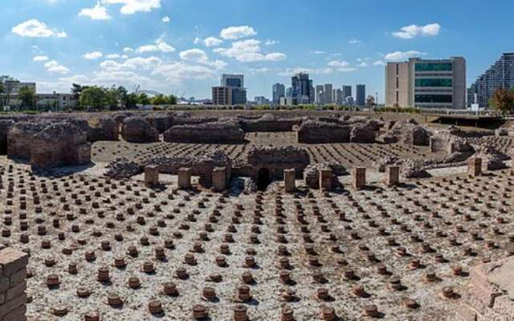

من حاتوشا، عاصمة أول إمبراطورية كبرى في الأناضول، إلى غورديون الملك ميداس، مع المجموعة الفريدة لمتحف حضارات الأناضول.
اليوم 1

يقع متحف حضارات الأناضول عند سفح قلعة أنقرة، في سوق محمود باشا وخان كورشونلو العائدين إلى القرن الخامس عشر بعد ترميمهما.

الحمامات الرومانية في أنقرة بقايا مجمّع حمامات كبير بُني في مطلع القرن الثالث الميلادي في عهد الإمبراطور كركلا، حين كانت المدينة تُسمّى أنكيرا.
اليوم 2

كانت حاتوشا عاصمة الإمبراطورية الحيثية، القوة الكبرى في العصر البرونزي، وحكمت نحو خمسمئة عام دولة امتدت من الأناضول إلى سوريا.

يعرض متحف بوغاز كوي، القريب من موقع حاتوشا، مكتشفات من العاصمة الحيثية.

ألاجا هويوك، قرب العاصمة الحيثية حاتوشا، من أهم مراكز العصر البرونزي في الأناضول.

يقع متحف جوروم في قلب الحضارة الحيثية، ويعرض مكتشفات من المراكز الحيثية الكبرى مثل حاتوشا وألاجا هويوك وشابينوفا وأورتاكوي.
اليوم 3

يقع متحف غورديون في قرية ياسي هويوك قرب بولاتلي، بجوار غورديون عاصمة المملكة الفريجية، مدينة الملك ميداس الأسطوري و«العقدة الغوردية» التي يُروى أن الإسكندر الأكبر قطعها.

مدينة ميداس (يازيلي قايا)، في قضاء هان بإسكي شهر وسط الوادي الفريجي، مستوطنة صخرية تضم بعضًا من أروع المعالم الفريجية.
مسارات جاهزة مرتبة يومًا بيوم لمساعدتك في التخطيط. المدد تقريبية؛ تحقق من مواعيد الزيارة وحالة الطرق قبل السفر.